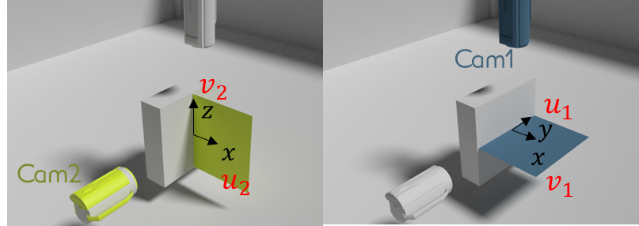
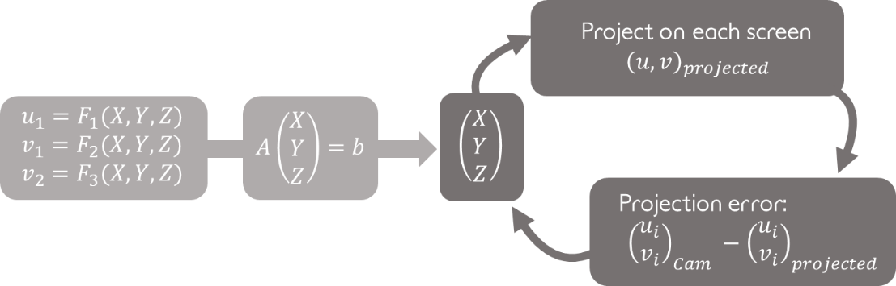
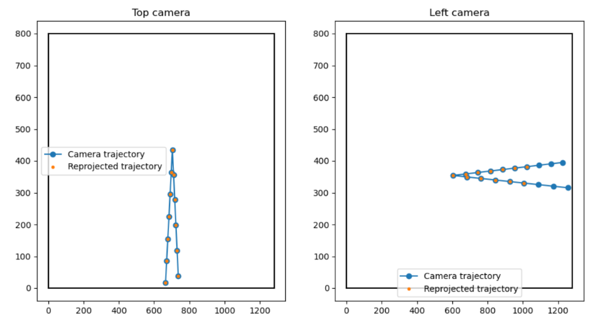

Accounting for perspective¶
Trajectory reconstruction¶
Perspective is accounted for by using the common pinhole camera model (see the opencv documentation for more detail)
First, a camera calibration must be performed for each camera to obtain both the camera intrinsic matrix \(F\) and the transformation matrix between the camera coordinate system and the sample’s coordinate system (CS) \(M\)
For each camera, the shot 3D coordinates in the sample CS are therefore related by the following relation:
\(\begin{bmatrix} s_1 u_1 \\ s_1 v_1 \\ s_1 \end{bmatrix} = F_1 \cdot M_1 \cdot \begin{bmatrix} X \\ Y \\ Z \\ 1 \end{bmatrix},\)
\(\begin{bmatrix} s_2 u_2 \\ s_2 v_2 \\ s_2 \end{bmatrix} = F_2 \cdot M_2 \cdot \begin{bmatrix} X \\ Y \\ Z \\ 1 \end{bmatrix},\)
for camera 1 and 2 respectively.
The two equations above can therefore be re-written as a linear system with 4 equations for our three unknowns (X,Y and Z).
As can be seen in the figure, the two cameras sees approximately the same information toward the x (u1 and v2 coordinates on each camera) coordinate of the shots, one of the above equation can be ignored to obtain a simple linear system with 3 equations and three unknowns
The function data_treat.reconstruction_3d.get_3d_coor() reconstructs the shot 3D trajectory with this method, assuming that the shot position on each camera and the cameras intrinsic and transformation matrices were already obtained.
-
data_treat.reconstruction_3d.get_3d_coor(minspan_len, traj_2d_left, traj_2d_top, cam_left, cam_top, method='persp', timespan=[])[source]¶ Retrieve the shot 3D trajectory from each cameras parameters and 2D trajectories
- Parameters
minspan_len – number of time points
traj_2d_left – trajectory found by the left camera
traj_2d_top – trajectory found by the right camera
cam_top,cam_left – camera object for the top and left camera
method – “persp” (default) or “persp-opti” - use analytical expression or least square optimisation
- Returns
Using the method “persp”, the function only builds the linear system, ignoring on of the four equations and inverts it to get the shot 3D trajectory.
Note
Usage of high frequency camera often requires to reduce the acquisition resolution to reduce the acquisition time. Since the camera intrinsic and transformation matrices relates the 3D coordinates to the pixel on the screen, the detected coordinates on each screen have to be expressed in the unresized screen frame. This is performed by the function data_treat.reonstruction_3d.cam_shift_resize() which is called automatically in the function data_treat.reonstruction_3d.reconstruct_3d(). The coordinate shift is performed knowing the camera initial and resized resolution provided in the camera objects.
Position optimisation¶
Slight time delay between the pictures taken by the two cameras can lead to errors in the trajectory estimation as the trajectory will be guessed using two pictures taken at different moments.
To reduce this error, the trajectory of one of the two camera is linearly interpolated to get the pixel coordinate of the shots on the two cameras at the same time. However, the time delay between the two cameras is difficult to caracterize experimentally. The ‘persp-opti’ mode of 3D eye finds the values of the camera delay that minimizes the overall projection errors on the two cameras using scipy differential_evolution optimization (see figure below).
Shot detection and 3D trajectory reconstruction using this method can be performed by calling the function data_treat.reonstruction_3d.reconstruct_3d() with the method attribute set to ‘persp’ or ‘persp-opti’.
Error indicators¶
In addition to being more accurate than the no-persp method, the persp and persp-opti method provides errors indicators on the recovered shot 3D coordinates. The reprojection error consist in projecting the shot (X,Y,Z) coordinates on each camera and compare it to the initially detected shot position on the screen. The reprojection is simply performed using the equations above for each camera.
The figure above provides an exemple of such reprojection error plot in an ideal case of a perfect camera system modeled in blender 3D software.
A bad match between the projected points and the detected points could result from:
1. a bad calibration of either the intrinsic or the transformation matrix: This problem could be solved by taking more chessboard pictures with more various positions, while ensuring the picture quality (see for instance this link for advices on camera calibration).
2. a bad detection of the shot position on one of the cameras: this could be solved by playing with the shot detection threshold, by using a more sophisticated feature detection algorithm (see for instance the opencv documentation) or by improving the picture contrast.
It should be noted that this indicator mostly indicates wether the method was well applied or not but not wether the method is relevent for the studied situation.
Reprojection error can be plotted using the data_treat.reconstruction_3d.plot_proj_error() function.
-
data_treat.reconstruction_3d.plot_proj_error(traj_top, traj_left, X, Y, Z, cam_top, cam_left, time, savedir='data_treat/Reproj_error.png', plot=True)[source]¶ Plot the reprojected trajectory for each camera to check for the trajectory errors
- Parameters
traj_top,traj_left – screen trajectory for the top and left cameras
X,Y,Z – computed 3D trajectory
cam_top,cam_left – top and left camera objects
savedir – path to the directory to save the reprojection error to
The error will also be plotted when calling data_treat.reconstruction_3d.reconstruct_3d() with the argument plot set to True.
If the pixel to centimeter ratio \(\delta\) is provided in the camera object (or in the respective input of the GUI), an uncertainty on the 3D position estimation will also be provided based on the reprojection error, computed as:
\(\sqrt{(x_{proj} - x_{detect})^2 + (y_{proj} - y_{detect})^2)} * \delta,\)
where \((x,y)_{proj}\) and \((x,y)_{detect}\) are respectively the reprojected and detected shot coordinate on the 2D screen.
..note: This estimation is neither a lower nor a higher boundary of the effective position error but provides an order of accuracy.